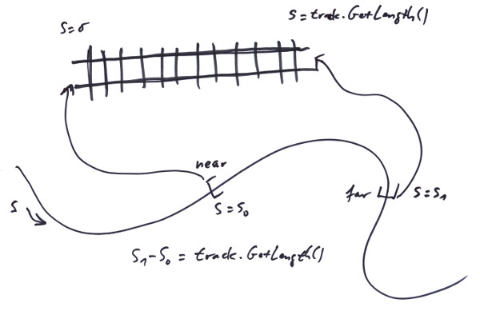
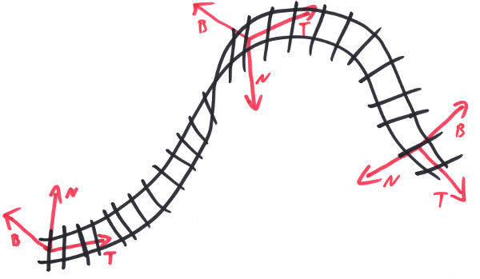

"What's Up?"
- 4 Non Blondes
A track is a part of a Curve with a strong idea about what is 'up' and two ends, that each can get coupled to one of another track's ends. We call the two ends Track::front and Track::end, to distinguish them from each other. In this way a track has a direction; it runs from a parameter value:
Length s = 0_m;at the Track::front end of the track, to:
s == track.GetLength();at the Track::end end of the track. In a process we call 'transition', a track converts this parameter value s into a three dimensional frame:
Frame<Length,One> frame;
track.Transition( s, frame );
the frame then gives the position along the track (at s), the tangent T and normal N as well as binormal B. To 'transition' a whole system of coupled tracks, we use a 'Location'. This Location maintains a reference to a track, a parameter value s of its current location and an orientational value. Then it is able to move along a track system, traversing from one track to another, according to their couplings [1]:
Location location{ track, { s, Orientation::para } };
location.Move( 100_m );
Frame<Length,One> frame;
location.Transition( frame );
To define the track's path in space, we use a curve (see Chapter 3). More specifically, we use an interval along that curve which runs from some near value to some far value, with the near value being at the front of the track, making for its parameter s= 0, and the far value being at the end, making for the track's parameter track.GetLength():
This obviously is done, since in general it matters which part of a curve we cut out, to make our track; since only a few curves (like e.g. an Arc) are symmetric enough to give the same geometry at any range. Note that the near value might very well be the bigger value along the Curve, so the track uses the curve in reverse, what we tend to call a 'flipped track'. For not being dependend with our track from the way a curve defines itself to be layed in space, we also add a general transformation frame to the track, so we can move it wherever we like.
Take a look at the railUnreal project (see Chapter 11): drag an 'Empty Actor' from the 'Modes' panel into the scene. In the 'Details' panel for the new actor hit the green 'Add Component' button. In the context menu appearing, there is a section called 'rail' and in it you'll find a component called 'Track'. This will produce a short straight default track in the scene. In the 'Content Browser' you'll find under 'Content/Curves' some predefined curves. Rightclick and select 'Miscellaneous/Trax Curve', to create a new curve and drag it over to the track's 'Details' panel's' 'Rail|Curve' section. Now the interval to map to the track can be specified by the 'Cure Parameter Interval' values.
As you experiment with curves and intervals, you might already encounter some problems with the up direction, e.g. if for the Arc curve the far value of the range becomes smaller than the near value. To cover this issue, we provide a so called 'Twist', which rotates the TNB frame around T by some angle in the intent to e.g. bring the B vector up. There is a combo box in the 'Twist' section, to select a twist. On double clicking on the twist, its settings can be specified. Try a track with an Arc curve, but let's assume, you want it to bend not to the right, but to the left. This would be done by rotating the track component in the editor around the tangent at starting point. But now the track faces down. This can be remedied by selecting a 'Constant Twist' and setting it to 180°.
If the curve is of the more complex kind, like e.g. a Cubic, a simple constant rotation might not be sufficient to achieve what we want:
For those cases we provide a so called 'Directional Twist' that allows to specify a global vector and make the track face that direction as far as geometrically possible. This for example can be the Up direction. In general it is usefull to have a directional twist to specify the 0° twist level, so it does no longer depend from the idiosyncrasies of some curve. On top of that we then specify some cant. For these situations we provide a 'Combined Twist' that allows to add the effects of two twists.
By definition, the twisted Frame Fw is gotten from the untwisted one F by:
Fw.P = F.P;
Fw.T = F.T;
Fw.N = cos(w) * F.N + sin(w) * F.B;
Fw.B = -sin(w) * F.N + cos(w) * F.B;
with w being the total twist that we apply to a track. For a directional twist we use an angle w(s) to apply at every point in a way to bring the Fw.B as close to an attractor vector A as possible. This makes Fw.B a function from w, too:
Fw.B(w,s) = -sin(w) * F.N(s) + cos(w) * F.B(s);
Let b(s) be the angle between Fw.B and A:
cos(b(w,s)) = Fw.B(w,s) * A; // b:[0,pi]
We are looking for an w = w0(s) for that the b(w0,s) would get minimal at every point along the track. For this the cosine would become maximal. And this happens exactly where:
d cos(b) / dw = 0;
meaning: 0 = dFw.B/dw * A;
-> 0 = -cos(w) * A * F.N - sin(w) * A * F.B; // for w=w0
If A*F.B == 0 -> w0 = +-pi/2, else w0 = -arctan(AF.N/AF.B);
We also need the derivation of w0:
dw0/ds = -1 / (1 + pow<2>(AF.N/AF.B)) * (A*dF.N/ds / AF.B - AF.N/pow<2>(AF.B) * A*dF.B/ds)
But from the Frenet - Formulas it follows: dF.N/ds = -kF.T + tF.B and dF.B/ds = -tF.N, so:
dw0/ds = -1 / (1 + pow<2>(AN/AB)) * (A*(-kT + tB) / AB - AN/pow<2>(AB) * A*(-tN))
= -1 / (1 + pow<2>(AN/AB)) * (-k*AT/AB + t*(1 + pow<2>(AN/AB)))
= k * AT/AB / (1 + pow<2>(AN/AB)) - t;
Note that for a directional twist w, the following relation holds:
t + dw/ds = k * AF.T/AF.B / (1 + pow<2>(AF.N/AF.B));
If you have a track with a directional twist in up direction and rotate it in space, it will always face up. This might feel kind of wobbly. What one might want to have is a track with a fixed direction that rotates with the track, a direction fixed local to the track's curve. For this the twist can be 'frozen'. Open the settings dialog for a directional twist and hit the freeze checkbox. If the track now gets rotated it stays rigid, the model doesn't change any more.
With a Curve, a Frame and a Twist any track geometry possible can get described. There are some constraints on these items, namely a curve has to exist up to the second derivative and be parametrized by its arc length (but any C2 path in space can get reprametrized); a Frame has to be orthonormal and a twist's first derivative has to exist. This given, the trias of Cuve, Frame, and Twist define the total geometry of a track. Any restrictions on them would restrict the set of track geometries that can be described. E.g. demanding that the range on a curve has always to start at the curve's parameter 0_m, or the Frame has to be the frame delived by transition at track parameter 0_m and the like. All these endeavours to simplify one's life would be payed by limiting oneself to a smaller set of possible track geometries and thereby lesser capabilities to solve geometrical problems.
To copy a track so that the copy maintains the original geometry one would have to use the same curve and range and clone the twist and the frame - or one might resort to the CopyTrackPiece() function which can even do more. To find a track that connects two points with variing restrictions on the tangents, one can use the Strech() series of functions. There are functions for mirroring, splitting or normalizing (i.e 'unflip') flipped tracks. A track's Frame can be set so that the transition at Length s would give a user supplied Frame frame by using TrackBuilder::SetFrame( frame, s ); there are plenty of helper functions to find a closeby location on a track or to segment tracks for rendering; making use of these and other methods from the library would really simplify one's life.
Model railroad manufacturer's tracks come in fixed sizes. Specific lengthes, specific arc radii. If you build with that in a plane you can be sure that whatever fancy curves your line makes, if you come back to finish a loop or attach to a switch, there always will be a prefabricated piece of track to fill the final gap. This changes, if you start to build in the third dimension. Not only will there be odd gaps if you want to close a line, but also you can not guarantee any more that the track's up direction will stay perpendicular to some plane. This so often causes confusion that I want to name it 'The fundamental problem of model railroading'. Both parts of the problem in trax can be handled by using propper Curves and Twists, like e.g. the Cubic and a directional twist.
There are two things that make a railroad fascinating: the one thing is that it divides the land. That feature even concerns the uninvolved, who all of a sudden stand 'West of the Atlanta-Hawkinsville-Railroad', while before being built they just stood in the swamp. The other thing is that it constructs clear decisions: left or right! - no compromises, no excuses, no negotiations.
That's done by switches. As one can see from the first image in this chapter, a switch is basically a re-connector of track ends. So we call them 'Connector' in their most general form. A connector provides several slots for being populated with track ends. It then maintains certain states and switching from one state to another means reconnecting the track ends in a specific way. To deal with the many intricacies of specific switches we also provide a (two way) Switch, a ThreeWaySwitch, SingleSlipSwitch, DoubleSlipSwitch and the like. This way, what is called a switch in reality, would be made up e.g. from three tracks and a connector plus some neat 3D models. Also mind the Indicator - system that trax provide.
There are two other possibilities to define tracks that would be halfway reasonable. The first one would be to define whole 'lines', with a 'line' being a branchless track from one switching point to the next (or to an open end). Typically several curves then would be needed to define the geometry of that line. B-Splines can be taken to do just that. It is not so much that we decided against this approach, but that it is contained within our design, which is more general. Curves like splines or other stiched together curves can be easily added to the system, by implementing the trax::Curve interface. The rest would be restrictions to tracks ending only in switch points (or without continuation), which is completely conventional.
The other possibility would be to create switches by branching at an arbitray location along a given track. More complex switches like double slip switches could be constructed from several such branching points. This approach would make construction of railroads easier since a track does not have to get splitted first, if someone wants to build a switch. The caveat here is that on rolling on the track - and be it only for 3_cm - it has always to be tested for branching points in that range. This is not so much a performance problem, but a code organisation problem: the track classes carry a lot of complexity with all Sensors, Signals, Reservations - not to mention Curves and Twists - going with them. In our design the tracks do not even know about something like Switches (i.e. Connectors) even existing and splitting a track is easy: just copy the track and change the ranges along the curve accordingly.